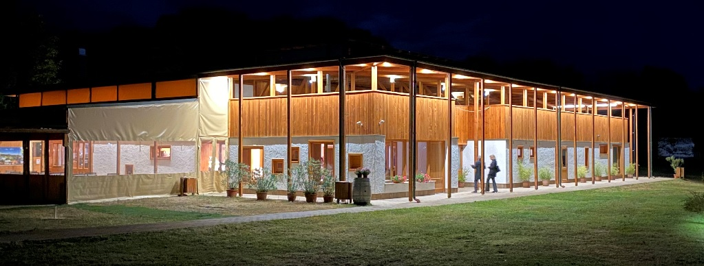
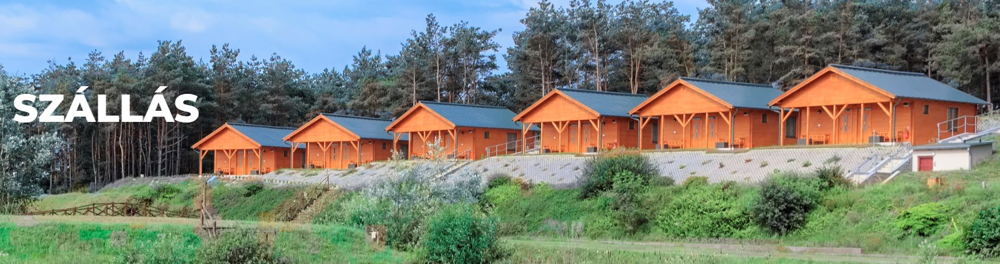

Lili és Pisti
Esküvő
Hogyan jutok el a Hanna Kincsébe?
A Waze alkalmazást használjátok (a Google Maps pontatlan útvonalon visz). Nagycserénél kell lefordulni, figyeljétek a lufikat és a táblákat!
További információt az esküvői helyszínünkről itt találhattok.
Program
A vendégvárás 15:00-kor kezdődik, ezt követi a kihelyezett polgári szertartás, a vacsora és a reggelig tartó buli!
Kijutás a hajszínre
Debreceni vendégeinket busz fogja a helyszínre vinni, a következő állomásokon lehet felszállni:
Amennyiben busszal szeretnétek jönni, kérlek azt előre jelezzétek nekünk! Hazafelé kisbuszok fognak vinni Benneteket hajnal 4 turnusban fél 1 és fél 5 között.
Szállás
Szállást a helyszínen is tudunk biztosítani korlátozott számban légkondicionált faházakban, valamint Debrecenben is. Szállás igényeteket kérjük szintén előre jelezzétek!
Allergének
Ha van bármilyen étel allergiátok, arról kérlek értesítsetek bennünket! Tekintve, hogy az esküvői helyszínünk az erdő közepén van, kérjük, hogy aki allergiás bármilyen rovarcsípésre (méh, darázs, stb.) az előre gondoskodjon a szükséges gyógyszerekről.
Ha kérdésem van, kit kereshetek?
Galéria


Már nagyon várjuk, hogy Veletek ünnepelhessünk!